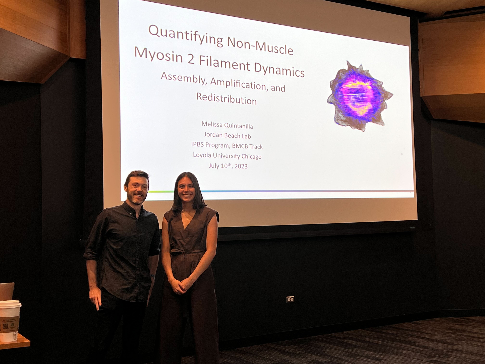

Upcoming
- 9/14/23 Patrick will be giving a seminar at the Chemistry and Biochemistry Department at Ohio State University
- 9/12/23 Alexia will be giving a talk at the Nanotechnology Core Facility at University of Illinois Chicago.
Past Events
- 8/24/23 We got our Notice of Award today for our R01 on Mechanotransduction via LIM Domain Protein Mechanosensing! 5 more years of funding to keep exploring all the amazing things that LIM domains do!
- 8/22/23 Maggie had a successful first thesis committee meeting. They approved her thesis proposal and she's excited to keep making more progress!
- 7/12/23 Joey absolutely killed it at his qualifying exam. Congrats on passing this milestone Joey!
- 7/10/23 Melissa in the Beach lab successfully defended her PhD thesis. She gave a great seminar and it was a fun defense to participate in. We've gotten to do some amazing science with Melissa during her time here at Loyola and are looking forward to all her future successes as a postdoc with Matthieu Piel starting in the new year. Congratulations Melissa!

- 6/25/23 Patrick and Alexia were at the Cell Contact & Adhesion Gordon Research Conference. Alexia presented a poster on her T cell migration work and got lots of good feedback. It was great connecting with friends old and new!
- 6/20/23 Shreya's review paper on using optogenetics to alter cell mechanics was accepted today! This is a good primer on the iLID RhoA system we use in the lab and how it can affect cytoskeletal flows and force production. Check it out here! And be on the lookout for her future work using this system and looking at septins!
- 6/20/23 Asia defended her Masters thesis today. She did a great job showing off all her cool data on leader blebb migration. Congratulations Asia!
- 6/9/23 Our really exciting collaboration with Jung-Bum Shin at UVA is out today in eLife! They began by studying actin repair in stereocilia after hearing damage. Their initial study found a short isoform of the protein XIRP2 localized to breaks the actin filaments and hypothesized that XIRP2 was mechanosensitive because it contained a single LIM domain. During their revision they reached out to us to verify that XIRP2 was mechanosensitive. It turns out they were partly right. XIRP2 is mechanosensitive, but it's not via the LIM domain. Instead it's the unstructured C-terminus domain! We're super excited to continue this collaboration and learn all we can about this novel mechanosensing domain.
- 6/8/23 Patrick led a workshop on quantitative image analysis at the Northwestern Quantitative Biology Symposium, hosted by the Department of Cell and Developmental Biology
- 6/8/23 Our collaboration with Wen-hung from the Gardel lab on how myosin monomers aggregate under different conditions to promote filament formation is out on bioRχiv! This work explores how myosin grows on stress fibers and the underlying mechanisms. Check it out!
- 6/1/23 Our collaboration with Eric Vitriol and the Beach Lab on the processivity of non-muscle myosin II is out in Biophysical Journal today! Go check out the final version! The movies are especially fun!
- 5/8/23 Stefano and Patrick wrote a Quick Guide on LIM domain proteins for Current Biology. Check it out for a brief intro to why we find these proteins so fascinating!
- 4/27/23 Melissa's paper about non-muscle myosin 2 assembly has been posted to bioRχiv! This is a tour de force of quantitative imaging. She shows that actin dynamics play a critical role in modulating myosin monomer levels that allow for filament formation. She also uses beautiful molecular counting to determine that the diffraction limited filaments we see on the microscope actually already contain multiple nm2 filaments! This highlights how important myosin-myosin interactions are in establishing new filaments. Check out all the details in the preprint! Twitter thread is below:
1/10
— Melissa Quintanilla (@fluoroforce) May 9, 2023
Beyond excited to share the preprint for most of my PhD work in the Beach lab @myosincity and with the Oakes lab @pwoakes! https://t.co/B82I9eSaFa
Here’s a little short-story(⏩️)/long-story(▶️)/visual thread about it… pic.twitter.com/rL5E7AUYjb - 4/21/23 Alexia and Shreya gave amazing talks at Chicago Cytoskeleton after winning the spring poster contest. Well done to you both!
- 4/17/23 Our collaborator's paper on ST3GAL1 and ΒII-spectrin controlling CAR T cell migration is online at Nature Immunology today. We played a small part, with Nick Reilly from our lab helping to look at LFA-1 concentration and migration in T cells with overexpressed ΒII-spectrin using TIRF. This was part of our P01 work funded by the NIAID. Congrats to Minsoo Kim's lab at the University of Rochester Medical Center on this massive work!
- 4/14/23 Patrick had a great time visiting the University of Toledo and giving a talk. It was my first department visit since the pandemic began and it was awesome to talk with so many people face to face again!
- 4/11/23 Patrick gave a talk as part of the online Cell Migration Seminar Series. If you missed it you can catch the recording of the livestream on YouTube.
- 4/11/23-4/25/23 Lee is attending the Quantitative Imaging: From Acqusition to Analysis course at Cold Spring Harbor Laboratory
- 4/5/23 Alexia gave a talk at the 5th Annual Mechanobiology Symposium at the University of Pennsylvania.
- 3/31/23 Alexia and Melissa made a micropattern of the Chicago skyline! Melissa designed the pattern and Alexia made it. This stunning image is an ~30mm pattern filled with fibroblasts and imaged as a giant montage!

- 3/29/23 Joey got an Honorable Mention on his NSF GRFP application. While we're bummed the award wasn't funded, the Honorable Mention is still a great achievement! Well done Joey!
- 3/26/23-3/30/23 Joey is attending the IUBMB-EMBO Focused Meeting on Emerging Concepts of the Neuronal Cytoskeleton in Chile!
- 3/24/23 Alexia and Shreya were selected as winners of the annual Chicago Cytoskeleton poster contest! They'll each get to give a talk at the next Chicago Cytoskeleton meeting on April 21st. Congratulations to you both!
- 3/1/23 Jordan and Patrick were interviewed by Máté Pálfy at the Journal of Science for their Cell scientists to watch series! They talked about what it's like to run a joint lab and how they try to balance young children and science.
- 3/1/23 We just posted our paper on using machine learning to predict traction streses in adherent cells! We're very excited to get this out to the world. This started as a pandemic project when we were all house bound. We wondered if we could use machine learning to make predictions about traction stresses. It succeeded beyond our wildest dreams and actually became a story about how we can use different machine learning approaches to discover new models of living systems. Check out the twitter thread here:
A thread on our recent paper with Vitelli and @squishycell1 labs. It’s got biology, physics, machine learning… a little something for everyone! It all started with a simple question:
— Patrick Oakes (@pwoakes) March 3, 2023
Can we predict traction forces directly from images of proteins?https://t.co/2K0P4UjELm - 2/26/23 Our latest collaboration with Eric Vitriol and Jordan Beach is out investigating processivitiy of non-muscle myosin 2 inside cells! This was a totally fun and unexpected direction when we saw myosin 2 peforming all sorts of anterograde processive motion in CAD cells. It is likely a product of their distinct actin architecture, but we think it probably happens in a variety of other systems. Will be interesting to explore this topic further!
- 1/8/23-1/13/23 Alexia will be giving a talk at the Directed Cell Migration Gordon Research Conference! She will also be attending the GRS.
- 12/3/22-12/7/22 So many great interactions at ASCB. Congrats on all the talks and posters!
- 12/3/22-12/7/22 The lab had a great presence at the American Society for Cell Biology (ASCB) national meeting in Washinton, DC!
- Saturday 1:47 PM (Melissa - Beach Lab) Subgroup : Building the Cell
"Identifying mechanisms of non-muscle myosin II filament assembly and amplification" - Saturday 2:46 PM (Patrick) Subgroup : Beyond Pretty Pictures: Quantitative Methods for Learning Cell Biology from Microscopy Datasets
"Machine Learning Novel Models of Cellular Contractility" - Sunday 4:15 PM (Lee) Minisymposium : Mechanotransduction Across Scales in Metabolism and Migration
"Cell Metabolism Regulates Contractility" - Monday 4:31 PM (Alexia) Subgroup : Nanoscale ImmunoBiophysics
"T cells switch between integrin-dependent and integrin-independent migration modes to migrate in complex environments" - Tuesday 11:45 AM (Maggie B - Beach Lab) Microsymposium : Actin, Tubulin, and Myosin, Oh My
"Smooth muscle myosin 2 filaments dynamically assemble and activate during induced contractility" - Tuesday 3:30 PM (Stefano) Minisymposium : Cellular Mechanobiology
"Dissecting the Recruitment Kinetics of Mechanosensitive Proteins to Stress Fiber Strain Sites"
Talks:
- Sunday 12/4/22:
- Board B60 (Asia) : Coordinated septin-actomyosin assembly in the stable bleb cortex
- Board B75 (Maggie U) : Cdc42-Dependent Perinuclear Stress Fibers are a Functionall Distinct Network with Septins, Myo18Aalpha and MRCK
- Board B495 (Stefano) : Dissecting the Recruitment Kinetics of Mechanosensitive Proteins to Stress Fibers Strain Sites
- Board B505 (Shreya) : Deciphering the Role of RhoA and Cell Geometry in Septin Recruitment to the Actin Cortex
- Monday 12/5/22:
- Board B543(Alexia) : T cells switch between integrin-dependent and integrin-independent migration modes to migrate in complex environments
- Tuesday 12/5/22:
- Board B39 (Lee) : Cell metabolism regulates contractility
- Board B91 (MaggieB - Beach Lab) : Smooth muscle myosin 2 filaments dynamically assemble and activate during induced contractility
- Board B100 (Melissa - Beach Lab) : Identifying mechanisms of non-muscle myosin II filament assembly and amplification
Posters:
- Saturday 1:47 PM (Melissa - Beach Lab) Subgroup : Building the Cell
- 11/12/22 Alexia gave a great talk at the 6th Annual Immune Imaging Symposium!
- 11/12/22 Alexia, Lee and Patrick will all be at the 6th Annual Immune Imaging Symposium being held at Cornell University. Alexia will be giving a talk and both Alexia and Lee will have posters! This symposium is supported in part by the P01 grant that Patrick is part of.
- 11/1/22 Abby Cody has joined the lab for a rotation. Welcome Abby!
- 10/11/22 Maggie Bennett's paper on smooth muscle myosin 2 dynamics from the Beach lab is up on bioRxiv! This project is looking at how smooth muscle myosin 2 is actually much more dynamic that originally thought and how increases in contractility stabilize the filaments. Congrats Maggie and everyone else involved!
- 10/4/22 Our collaboration with Qing Deng's lab at Purdue is up on bioRxiv! This project looks at how deletion of Mitofusin 2 affects Rho signaling. Lee from our lab contributed some of the traction force experiments testing whether Mfn2(-/-) cells were more contractile than the WT.
- 9/23/22 Patrick gave a talk at Toledo CellulART. This was a great regional conference organized by the Garcia-Mata lab that focuses on combinging art and science. Alexia also attended the conference and won a poster prize! Congratulations Alexia!
- 9/2/22 Shreya had a great first dissertation committee meeting (appropriately scheduled on Sept2!). Everyone was very excited for her project and gave her the thumbs up to continue. Well done Shreya!
- 7/17/22-7/22/22 Patrick gave a talk at the Signaling by Adhesion Receptors Gordon Research Conference
- 7/7/22 Maggie successfully passed her qualifying exam. Way to go Maggie!
- 7/3/22 Our application to visit the Janelia AIC was accepted! We're going to go image some super-resolution septin stress fibers on the IPALM system! Looking forward to this trip!
- 6/11/22 The lab got together for a fun BBQ!
- 6/1/22 Ann Koshy, a Loyola University Chicago Undergraduate, is going to be working with us for the summer. She'll be working closely with Shreya on a project to characterize septin knockdown cells. Welcome Ann!
- 5/16/22-5/19/22 Melissa Quintanilla from the Beach lab will be presenting work from our collaboration on counting myosin at the European Cytoskeletal Forum Meeting in Hanover, Germany.
- 5/15/22-5/18/22 Stefano will be presenting a poster about his work on LIM domain proteins at the EMBL Mechanobiology in Development and Disease workshop in Heidelberg, Germany. Come check out his poster to see all sorts of fun data about novel mechanisms of strain sensing in this amazing group of proteins!
- 4/24/22 Alexia introduced the lab to the Quebec tradition of Sugar Shacks. So of course we all dressed up in flannel!
- 4/12/22 Patrick gave the BMB Seminar at Loyola Univeristy Chicago
- 4/1/22 Patrick along with his collaborators in the Cell and Molecular Physiology Department Dr. Jordan Beach and Dr. Gregory Aubert, were awarded a Transformative Grant Award from the Office of the Vice Provost of Research at Loyola University Chicago for our grant titled: "Establishment and Characterization of Pathological Vascular Smooth Muscle Cells from Loyola Patient-derived iPSC". We can't wait to get started on this fun new avenue of research!
- 3/18/22 Patrick gave a talk at the spring Chicago Cytoskeleton meetings.
- 3/15/22 The Oakes lab presented on the monthly Septin Zoom seminar. Maggie U, Shreya and Asia all gave updates on their projects related to septins and their roles in migration.
- 3/14/22-3/18/22 The Oakes lab is at the APS March Meeting being held in Chicago! We're on a couple of different talks and posters you can check out:
- Session A06: Our collaborator Matthew Schmidt from U Chicago with be presenting his work "Machine learning continuum models for cellular force generation". We're all super excited for this project. Look for a preprint soon!
- Session B07: Our collaborator Melissa Quintanilla from the Beach Lab will be presenting her work "Identifying mechanisms of non-muscle myosin II filament assembly and amplification"
- Session N00: Alexia will be presenting a poster on "Extracellular matrix geometry regulates T cell migration mode".
- 3/13/22 Patrick and other alumni from the Gardel lab got together to celebrate the Gardel Lab's 15th year! Congratulations Margaret!
Celebrated the Gardel Lab's 15th year last night! I feel so fortunate to have worked with so many smart, creative and nice people! pic.twitter.com/nlFpmxedHh
— Gardel Lab (@squishycell1) March 14, 2022 - 2/28/22 Patrick got official word that he was promoted to Associate Professor with Tenure, effective July 1st, 2022! Woohoo!
- 1/4/22 Melissa Quintanilla designed this incredible logo for the lab highlighting four aspects of our research: Optogenetics, Traction Force Microscopy, LIM domain mechanosensing, and micropatterning! Thanks Melissa!
- 1/3/22 Joey Tidei has joined the lab as a joint PhD student with the Beach lab! Welcome Joey!
- 12/15/21 Anita Baillet, Michael McMurray and Patrick wrote a summary of the excellent EMBO Septin Workshop that he attended in the fall for J Cell Sci that came out today!
- 11/29/21 Asia Paguntalan is joining the lab for her Masters in Biochemistry and Molecular Biology! She'll be doing a joint project between us and the Beach Lab.
- 11/8/21 Patrick gave a virtual seminar to the Institute of Molecular Genetics and Cell Biology at the University of Ulm, Germany
- 11/1/21 Kristen Young, a first year PhD student is doing a rotation with us. Welcome Kristen!
- 10/14/21 Our paper on using Fast Fourier Transforms to measure alignment in biological images was published today! Check out the final version in Frontiers in Computer Science: Computer Vision today!
- 9/12/21-9/15/21 Patrick gave a talk at the EMBO Septin 2021 Workshop in Berlin. What a great conference and chance to meet so many people working on septins. The hybrid format really worked well!
- 8/23/21 Masters student Asia Paguntalan is doing a joint rotation with us and the Beach lab. Welcome Asia!
- 8/19/21 The final version of Stefano's paper is online at Molecular Biology of the Cell
- 7/26/21 A twitter thread on our latest preprint:
Our newest preprint is out! https://t.co/3IeJ9xZRjT
— Patrick Oakes (@pwoakes) July 26, 2021
Have you ever wanted an easy way to measure the organization/architecture of filamentous structures like the cytoskeleton or ECM in your images? - 7/22/21 Our latest preprint is out on bioRxiv! It's a methods paper about how to use Fast Fourier Transforms (FFTs) to extract local alignment data from biological images. This builds off previous efforts from the lab and was expanded by Stefania Marcotti from the Stramer lab at King's College London. The code is all available on our GitHub page with versions for both MATLAB and Python.
- 7/6/21 Shreya successfully passed her qualifying exam today! Congrats Shreya!
- 6/23/21 Maggie successfully defended her Masters in Neuroscience thesis today! Congrats Maggie! Maggie will be staying on with the Oakes and Beach Labs to pursue her Ph.D.
- 5/26/21 Stefano's paper about the mechanosensitivity of the LIM domain protein testin was accepted to MBoC!
- 05/14/21 Patrick will be giving a talk virtually at the One Biophysics Meeting at the University of Toronto.
- 3/4/21 Maggie has officially accepted a spot in next year's PhD class here at Loyola! We're all super excited that you'll continue to be around for the next few years!
- 1/22/21 Stefano's paper was posted on bioRxiv and submitted today. Read all about his amazing work on the LIM protein testin and how it recognizes stress fiber strain sites here! Or follow the twitter thread here:
1. Our latest preprint from postdoc @Stefano_R_Sala is up on biorxiv!
— Patrick Oakes (@pwoakes) January 22, 2021
RhoA mediates stress fiber strain site recognition by the LIM protein testinhttps://t.co/GdIiRcYBiL
Want to learn about LIM domain mechanosensitivity? Follow along: - 12/8/20 Stefano gave a talk about his work on the mechanosensitivity of the multimodular LIM domain protein testin in a subgroup at Cell Bio Virtual 2020. His talk is from 1:47-2:07 PM EST.
- 9/1/20 We're very excited that Alexia Caillier is going to be joining the lab as a postdoc in February 2021! Alexia is coming from Marc-Etienne Huot's lab at Laval University in Quebec, Canada where she works on protein translation at sites of adhesion. She defends in January and we're looking forward to her joining us soon after!
- 7/24/20 Our most recent paper with the Fowell lab is now online at Frontiers in Immunology!
- 7/19/20 We're very excited that Lee Troughton, PhD is going to be joining the lab as a postdoc in February 2021! Lee is coming from Kevin Hamill's lab at the University of Liverpool, UK where he worked on laminins, specifically the LaNt α31 isoform and it's impact on tumor invasiveness.
- 6/9/20 Our paper with Deborah Fowell's lab at the University of Rochester was just accepted at Frontiers in Immunology. Nick from our lab helped do all the in vitro assays to show how fibronectin regulates CD4+ T cell migration. Congrats to Ninoshka and Nick!
- 6/2/20 Our collaboration paper that was just published in PNAS was chosen for the cover of this week's issue! Congratulations Emma!

- 5/21/20 Our newest paper, a collaboration with Dabid Topham's lab at URMC is out in PNAS. It's all about the role of CD103 and CD49a integrins in modulating adhesion of TRM cells. Read it here!
- 5/13/20 Patrick gave a seminar to the Department of Molecular Pharmacology & Neuroscience at Loyola University Chicago today.
- 3/13/20 The Chicago Cytoskeleton meeting Patrick was going to speak at was canceled due to the Covid-19 precautions. This was a sensible decision made for the safety of all and we look forward to the next meeting!
- 03/2/20 Patrick gave an internal seminar for the Integrative Cell Biology Program within the Stritch School of Medicine
- 02/24/20 Shreya has joined the lab as graduate student in the Biochemistry & Molecular Biology Track. Welcome Shreya!
- 2/14/20 Our recent collaboration with David Topham's lab about the role of different integrins in Tissue Resident Memory T cells is up on bioRxiv! Congratulations Emma!
- 2/7/20 Our new protocol paper with the Gardel Lab about using the optogenetic RhoA system is out in Current Protocols in Cell Biology!
- 1/6/19 Maggie Utgaard has joined our group to do a joint Masters project with the Beach Lab. Welcome Maggie!
- 12/7/19-12/11/19 Patrick and Stefano will be at the ASCB/EMBO meeting in Washington, DC. Come check out Stefano's poster Monday afternoon (P1506/B640) to see our latest results on the mechanosensitivity of the LIM domain protein testin!
- 12/1/19-12/6/19 Patrick gave a talk at the Material Research Society Fall Meeting
- 11/2/19 Patrick and Nick were at the 5th Annual Immune Imaging Symposium supported by the P01 project grant.
- 10/30/19 Patrick and collaborator Jordan Beach were awarded a James & Carolyn Beck Equipment Grant from the Loyola University Chicago Cardiovascular Research Institute. The funds will be used to support the purchase of a Ring TIRF system to be installed on the new Oakes Lab microscope!
- 10/17/19 Patrick and the lab received funding from the NIH National Institute of Allergy and Infectious Diseases (NIAID) as part of a program project grant headed by Deborah Fowell at the University of Rochester Medical Center! Patrick's portion of the grant focuses on the mechanics of immune cell migration. The grant includes funding for a postdoctoral position so be on the look out for a job advertisement soon!
- 9/18/19 Patrick gave the Biophysics Colloquium at Cornell University
- 8/1/19 A new chapter starts for the lab as we've moved to Loyola University Chicago Stritch School of Medicine in the Department of Cell & Molecular Physiology! We'll be hiring so anyone interested in joining our group should reach out!
- 6/6/19 Our collaboration with Tamara Bidone and Greg Voth is out in PLoS Computational Biology! This model builds on our recent PNAS paper about the role of integrin bonds in substrate stiffness sensing. Here we look at how different bond kinetics in integrins can facilitate adhesion formation.
- 6/5/19 Nick successfully passed his qualifying exam today! Way to go Nick!
- 5/28/19 We have two undergraduates working with us this summer as part of an REU program. Lydia is a University of Rochester student majoring in Biochemistry and Maham is a Reed College student majoring in Physics. Welcome Lydia and Maham!
- 5/9/19 Patrick gave a talk in the Department of Anatomy & Cell Biology at the Kansas University Medical Center and got to hang out with Prachee Avasthi!
Beyond excited to have my brilliant friend & fellow actin aficionado @pwoakes here for a visit! pic.twitter.com/vkORSFpPBT
— Prachee Avasthi (@PracheeAC) May 9, 2019 - 4/5/19 The first Central NY Cytoskeleton Meeting! Patrick is organizing with Jessica Henty-Ridilla from SUNY Upstate Medical University and Scott Forth from RPI. Details can be found here!
- 3/27/19 Patrick gave a seminar in the Department of Microbiology & Immunology at URMC
- 3/22/19 Patrick gave a talk in the Department of Physics at Syracuse University
- 3/20/19 Patrick gave a seminar at the Aab Cardiovascular Research Insitute at the University of Rochester Medical Center
- 3/19/19 Our collaboration with Sarah Barger and Mira Krendel from SUNY Upstate was published in Nature Communications today! Nick helped do all the force measurements of the frustrated phagocytosis. Congratulations Sarah, Mira and Nick!
- 3/11/19 Gabrielle Kosoy has joined the lab for her rotation! Welcome Gabrielle!
- 2/25/19 Registration is open for the first Central NY Cytoskeleton Meeting!. Register HERE

- 2/18/19 Patrick gave a talk in the Department of Cell & Molecular Physiology at the Loyola University Stritch School of Medicine
- 2/6/19 Our new work on integrin kinetics during early stage adhesion assembly is now posted on bioRxiv! This is a follow-up work to our recent PNAS paper in collaboration with Tamara Bidone and Greg Voth from U Chicago.
- 2/1/19 Our collaboration with the Bergstralh lab was chosen for the cover of EMBO Journal. Congratulations Tara!

- 1/27/19-2/1/19 Patrick gave a talk at the Gordon Research Conference on Complex and Adaptive Material Systems. Austin presented a poster on modeling septin filaments too!
- 1/28/19 Lydia Petricca, an undergraduate biochemistry major, has joined the lab. Welcome Lydia!
- 1/2/19 Ashlin James Poruthoor has joined the lab for a rotation. Welcome Ashlin!
- 12/8/18-12/12/18 The lab will be at the Annual American Society for Cell Biology Meeting in San Diego!
- Posters from the lab
- Monday Poster Board B605 / P2423 - Stefano Sala - "Mechanosensitivity mechanisms of the LIM domain protein testin"
- Tuesday Poster Board B637 / P3288 - Nick Reilly - "αVβ3 Integrin Expression Regulates CD4+ T Cell Migration Phenotypes"
- Sunday Minisymposium 2 - M19 - Sarah Barger - "Membrane-Cytoskeleton Mechanical Feedback Mediated by Myosin 1 Controls Phagocytic Efficiency"
Our Collaborators
- 11/26/18 Our collaboration with the Bergstralh lab has been published at EMBO Journal. Congratulations everyone! Check it out here!
- 11/3/18 Patrick gave a talk at the 4th Annual Immune Imaging Symposium!
- 10/19/18 Patrick gave a talk in the Department of Molecular, Cellular, and Developmental Biology at the University of Michigan
- 10/2/18 Our collaborators in the Krendel Lab from SUNY Upstate have posted their manuscript to bioRxiv. Sarah, the lead author, did some of the experiments in the manuscript with the help of Nick in our lab.
- 9/4/18 We have a new rotation student from the Department of Biology. Welcome Mingyi!
- 8/2/18 Lab lunch at Dinosaur Bar-B-Que to celebrate Denis finishing her REU with us!
- 7/30/18 Denis is featured in article highlighting summer REU students at Rochester.
- 6/1/18 Patrick's CAREER Award was highlighted on the Department of Physics & Astronomy website. Read the article here.
- 5/30/18 Denis Ortega Ioni from Florida International University has joined the lab as a summer REU student. Welcome Denis!
- 5/23/18 Check out Patrick's new review in Current Opinion in Cell Biology!
- 5/18/18 Check out Patrick's News & Views article in Nature Immunology with Deb Fowell from URMC talking about T cell motility
- 5/11/18 Austin has received a Donald M. and Janet C. Barnard Fellowship from the University of Rochester. This award recognizes his strong research output and his commitment to mentoring and outreach. Congratulations Austin!
- 5/8/18 Dr. Stefano Sala has joined the lab as a postdoc. Stefano is a biochemist coming from the University of Ghent in Belgium. Welcome Stefano!
- 4/23/18 Patrick will be speaking at Genetics Day at the University of Rochester Medical Center
- 4/2/18 Recent work the lab contributed to was chosen for the cover of the Journal of Cell Biology! They also published a short podcast video describing how it builds on a previous paper from Patrick.

- 3/1/18 Patrick received an NSF CAREER award!
- 2/27/18 Check out our new paper about myosin-independent mechanosensing that was just published in PNAS!
- 2/5/18 Check out a new paper that the lab contributed to that was just published in Journal of Cell Biology!
- 1/15/18 Patrick has joined the editorial board of the journal Cytoskeleton
- 12/2/17-12/6/17 The lab will be at the American Society for Cell Biology annual meeting in Philadelphia
- Posters from the lab
- Sunday Poster Board B654 / P1639 - Nick Reilly - "Effect of influenza infection on epithelial monolayer integrity"
- Monday Poster Board B646 / P2495 - Austin Skeeters - "The lamellipodium is a myosin independent mechanosensor"
- Sunday Poster Board B813 / P1795 "Breaking Hertwig's Rule in the Drosophila Follicular Epithelium"
Our Collaborators
- 10/18/17 Some of our microscope images were put up on the Jumbotrons at the University of Florida as part of the Soft Matter Symposium! So cool to see a 100 ft cell!

- 10/17/17-10/19/17 Patrick gave an invited talk at the Soft Matter Symposium at the University of Florida
- 9/26/17 Patrick gave a talk at the Center for Studies in Physics and Biology at the Rockefeller University
- 9/15/17 Patrick gave a talk at the Institute of Science and Technology Austria
- 9/11/17-9/14/17 Patrick gave an invited talk at the Abercrombie Meeting 2017 being held in Oxford, UK
- 9/8/2017 Our new paper about a myosin independent mechanosensing mechanism is on the BioRxiv!
- 8/19/2017 Our collaboration with the Bergstralh lab on spindle orientation in proliferating epithelium is on BioRxiv
- 7/1/2017 The lab and our collaborators (Biteau Lab - Biomedical Genetics and Bergstralh Lab - Biology), were awarded a SAC Incubator Award from the School of Medicine & Dentistry!
- 6/18/17-6/23/17 Patrick gave an invited talk at the Cell Contact & Adhesion Gordon Conference
- 6/12/17 Our paper on optogenetic control of RhoA is now out in Nature Communications!
- 4/5/17 Patrick gave a talk at the BioQuant Seminar series at the University of Heidelberg
- 4/2/17-4/8/17 Patrick was an invited speaker at the Mechanisms of actin-dependent force generation course at the EMBL
- 3/3/17 Check out our new paper in Scientific Reports on the role of cholesterol in cardiomyocytes!
- 2/22/17 Check out our new paper in Molecular Biology of the Cell on contact guidance of migration!
- 2/2/17 Patrick gave a seminar in the Department of Biomedical Genetics - 1:45 PM in KMRB 2.9654
- 1/31/17 Patrick gave a talk at the Seeds for Collaboration event sponsored by School of Medicine and Dentistry, and the Ernest J. Del Monte Institute for Neuromedicine
- 12/3/16-12/7/26 Patrick gave an invited talk and a poster at the American Society of Cell Biology annual meeting in San Francisco.
Poster: Sunday Afternoon, Board B1230
Talk: Tuesday 5:35 PM, Room 305 - Minisymposium 14: Cell Mechanics - 11/8/16 Patrick gave a seminar in the Department of Biomedical Engineering - Sloan Auditorium, Goergen Hall 101 at 8:30 AM
- 11/2/16 Patrick gave a colloquium in the Department of Physics at the Rochester Institute of Technology
- 10/25/16 Patrick presented at the Biophysics retreat for the Department of Biochemistry & Biophysics
- 10/10/16-10/14/16 Patrick gave an invited talk at a Banff International Research Station (BIRS) Workshop - Modeling and Quantifying Cell Function: 25 years of Cell Mechanobiology
- 10/3/16 Patrick gave the Donut Talk Seminar in the Department of Biology - Lander Auditorium, Hutchinson Hall 140 at 12 PM
- 8/25/16 Check out our new paper in Nature Communications about contraction in disordered cytoskeletal networks!
- 8/2/16 Patrick presented at the Physical Models of Biological Systems workshop, sponsored by the University of Rochester Departments of Physics & Astronomy and Mechanical Engineering. Bausch & Lomb 106 1-5:30 PM
- 8/1/16 Lab website is live!

{kind=link}
{kind=link}